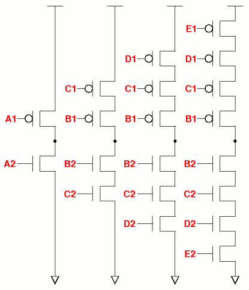

| vlsitechnology.org /Linux help/new cell characterisation /thresholds | |
Transition measurement thresholds | |
Linux help
Windows help
Linux Live CD
For multi-stage cells, the measurement threshold for the output transition time is the 10%-90% points. This is also the threshold for one series transistor in a single stage inverting cell.
For a single stage inverting cell with series connected transistors, the measurement threshold depends on the position of the transistor in the series stack.
| P-transistor position | lower_lh | upper_lh |
|---|---|---|
| A1 | 10% | 90% |
| B1 | 8% | 92% |
| C1 | 7% | 93% |
| D1 | 6% | 94% |
| E1 | 5% | 95% |
| N-transistor position | lower_hl | upper_hl |
|---|---|---|
| A2 | 10% | 90% |
| B2 | 8% | 92% |
| C2 | 7% | 93% |
| D2 | 6% | 94% |
| E2 | 5% | 95% |
